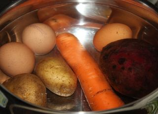
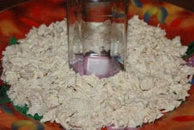
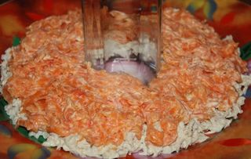
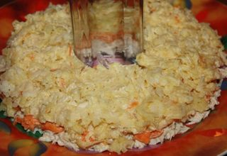
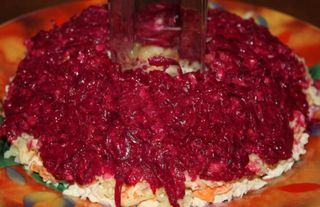
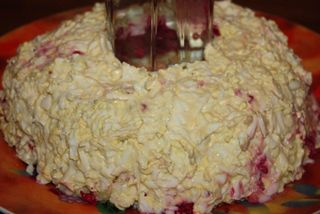

Шаг 1: подготавливаем курицу.
Берем куриное филе тщательно промываем его прохладной водой, затем отправляем в кастрюлю с подсоленой водой, отвариваем до готовности, на это уйдет примерно 20 минут. С готовой курицы сливаем воду и остужаем. После этого мелко нарезаем наше филе, но не переусердствуйте, кусочки мяса должны чувствоваться.
Шаг 2: подготавливаем овощи.

Тщательно моем овощи и яйца, и также отправляем их вариться в кастрюльке с подсоленой водой. Овощи варим в мундире примерно 40 минут, готовность проверяем ножом. С готовых овощей осторожно сливаем воду, остужаем и очищаем.
Берем самую красивую и желательно большую, широкую тарелку, в центр ставим стакан. Вокруг него будем слоями выкладывать салат и формировать наш венок.

Нарезанную курицу смешиваем с майонезом, перчим и солим по вкусу и аккуратно выкладываем вокруг стакана.
Шаг 5:

.
Морковь натираем на крупной терке, тоже смешиваем с майонезом. Выкладываем поверх курицы.
Шаг 7:

.
Картофель натираем на крупной терке, солим, добавляем майонез. Все аккуратно перемешиваем и выкладываем поверх моркови.

Измельчаем орехи и чеснок. Свеклу также натираем на крупной терке, заправляем майонезом. Перемешиваем нашу свеклу с орехами и чесноком, солим, выкладываем на картофель.

Теперь натираем яйца на все той же крупной терке, солим и опять смешиваем с майонезом. Аккуратно формируем завершающий слой нашего салата.
Шаг 8: Подаем "Рождественский венок" к столу.